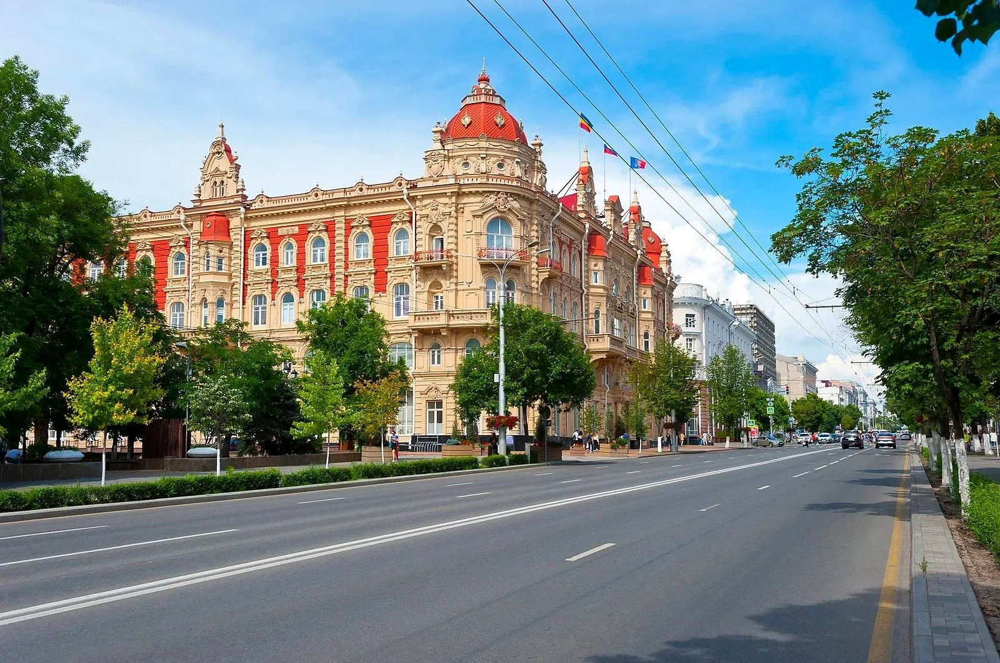
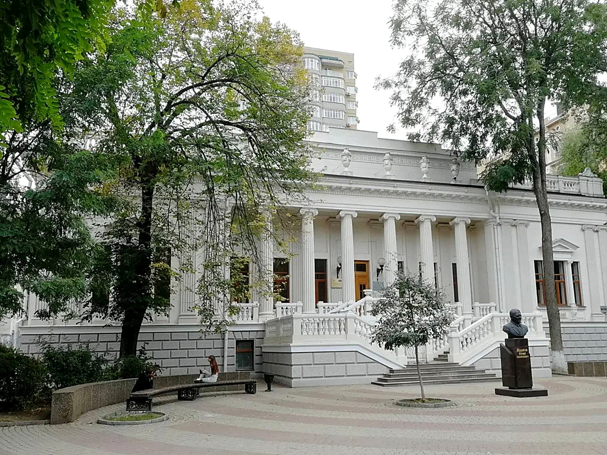
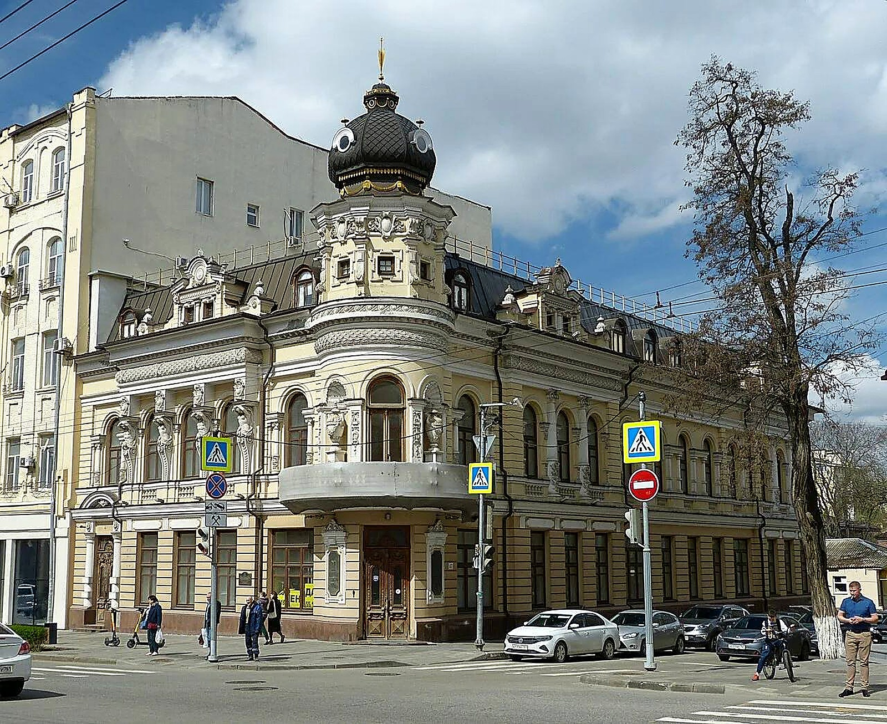
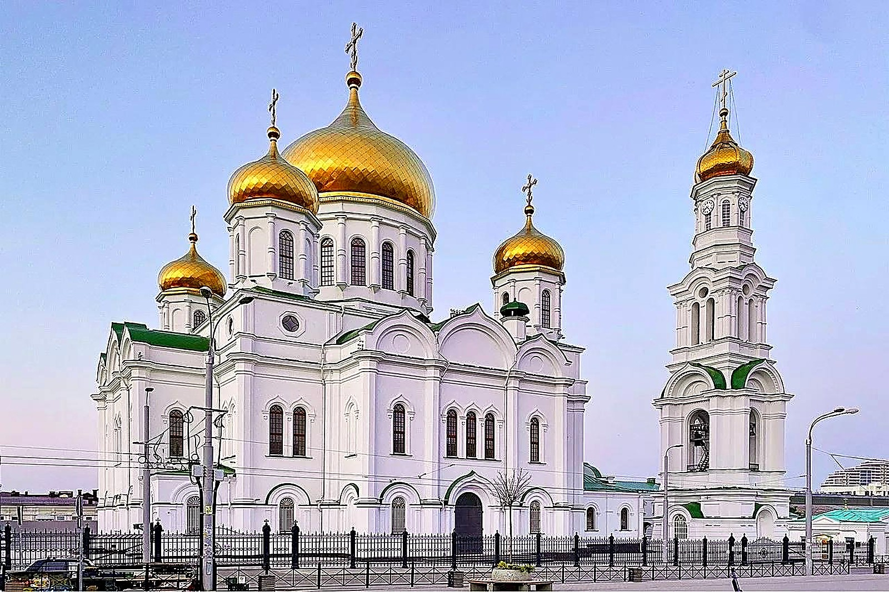
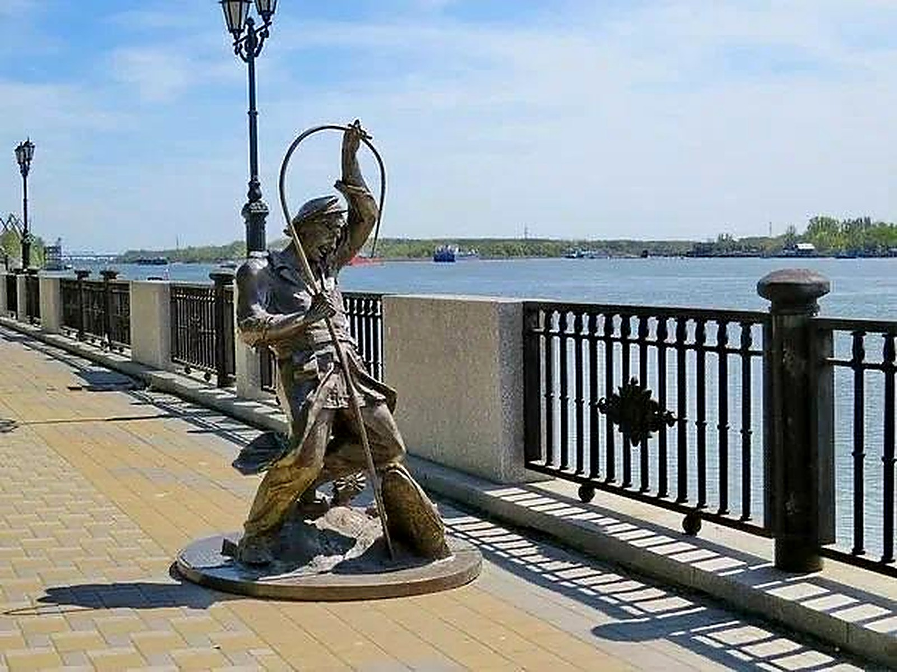

↖ Здание городской думыАдминистративное здание на Садовой
↑ Особняк ПарамоноваКупеческий особняк
↗ Дом Маргариты ЧерновойФигуры-колонны на фасаде
← Кафедральный соборГлавный православный храм
Цель: найти Академию архитектуры и искусств ЮФУ
Соборная площадь
Площадь у собора, одно из знаковых мест города.
Подсказка: Академии здесь нет. Загляните туда, где в зелени стоят два героя Шолохова: старик и мальчишка.
 → Музей «Россия — моя история»Мультимедийный музей
→ Музей «Россия — моя история»Мультимедийный музей

↙ Скульптура рыбакаРыбак с удочкой у воды ↓ «Дед Щукарь» и «Нахаленок»Герои Шолохова
↓ «Дед Щукарь» и «Нахаленок»Герои Шолохова
 ↘ Парамоновские складыКирпичные склады XIX века
↘ Парамоновские складыКирпичные склады XIX века